DV-CQ-003 · Quem não tem a função de chefe do CQ, e até o perfil só de consulta, consegue aprovar o laudo
Na Emissão Laudo Final, o botão **Aprovar** aparece para qualquer usuário que abra a tela e a gravação não confere a função profissional de chefe (função 48). Foram aprovados laudos por um usuário **sem nenhuma função profissional** do CQ (017/26) e por um usuário de **perfil só de consulta**, sem as permissões de incluir, alterar ou excluir (015/26). O que a tela esconde para quem não tem a função é só o botão **Emitir Laudo**. A única barreira que funciona é "quem digitou o resultado não aprova" (CT-CQ-010 passou: "O Responsável pela aprovação precisa ser diferente dos analistas das análises.").
Como reproduzir o erro, passo a passo
- Entrar com um usuário que não tem a função de chefe do CQ (por exemplo, o de perfil só de consulta).
- Abrir Análise e Laudo › Emissão Laudo Final e escolher uma análise digitada (situação "Liberar laudo").
- Clicar em Aprovar e confirmar com SIM.
Esperado
Recusar a decisão de quem não tem a função de chefe do CQ nem permissão de aprovar (mensagem clara), e deixar o botão escondido.
Obtido
"Confirma APROVAR o laudo?" e depois "Alteração efetuada com sucesso."; o laudo ficou aprovado.
Evidência (captura da tela)
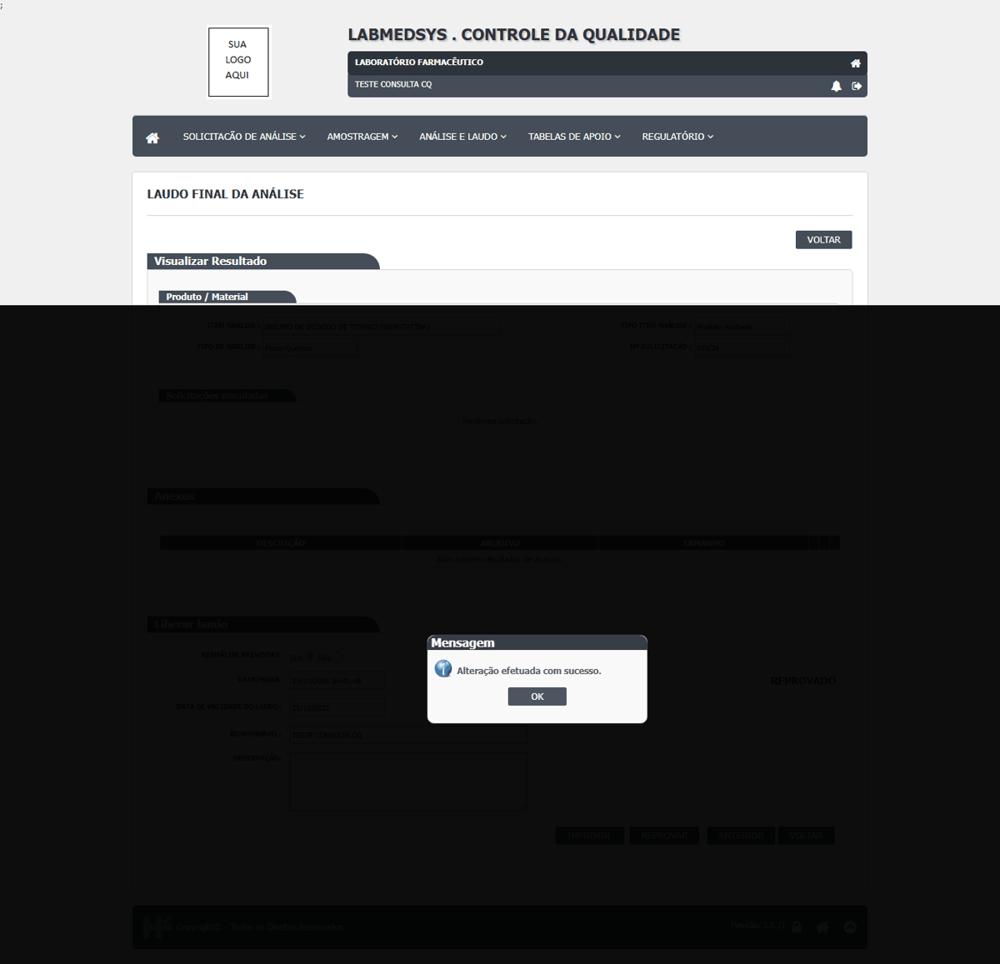
DV-CQ-004 · Basta clicar em Reprovar para o Estoque marcar o lote como REPROVADO, mesmo sem o laudo ser emitido
Depois de **Reprovar** a análise da 018/26 (teor 120, limite de 95 a 105), sem emitir o laudo, o botão **Atualizar resultado** do Estoque trouxe o lote `TESTECQ002` como **REPROVADO**. Para a aprovação o contrário acontece: a 017/26, aprovada e com laudo emitido, só virou APROVADA no Estoque depois de **Atualizar resultado** (CT-CQ-014 passou: antes disso o Estoque continuou em SOLICITADO, o CQ não avisa). Ou seja, a reprovação vale sem laudo; a aprovação não.
Como reproduzir o erro, passo a passo
- No CQ, deixar uma análise fora da especificação em "Liberar laudo" e clicar em Reprovar (sem emitir o laudo).
- No Estoque, abrir Controle da Qualidade, procurar o item de entrada da análise e clicar em Atualizar resultado.
Esperado
O Estoque só aceita "reprovado" com o laudo emitido, como faz com "aprovado".
Obtido
A situação do lote passou de SOLICITADO para REPROVADO sem laudo emitido.
Evidência (captura da tela)
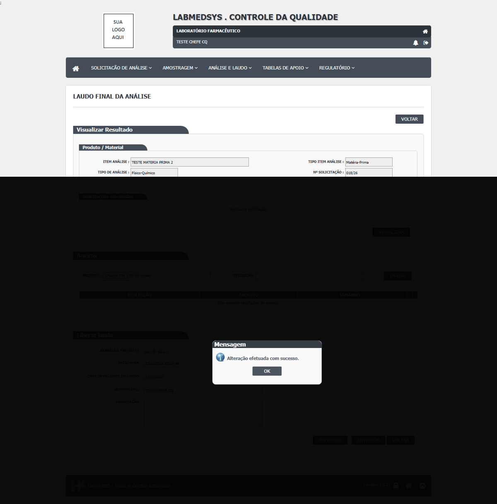
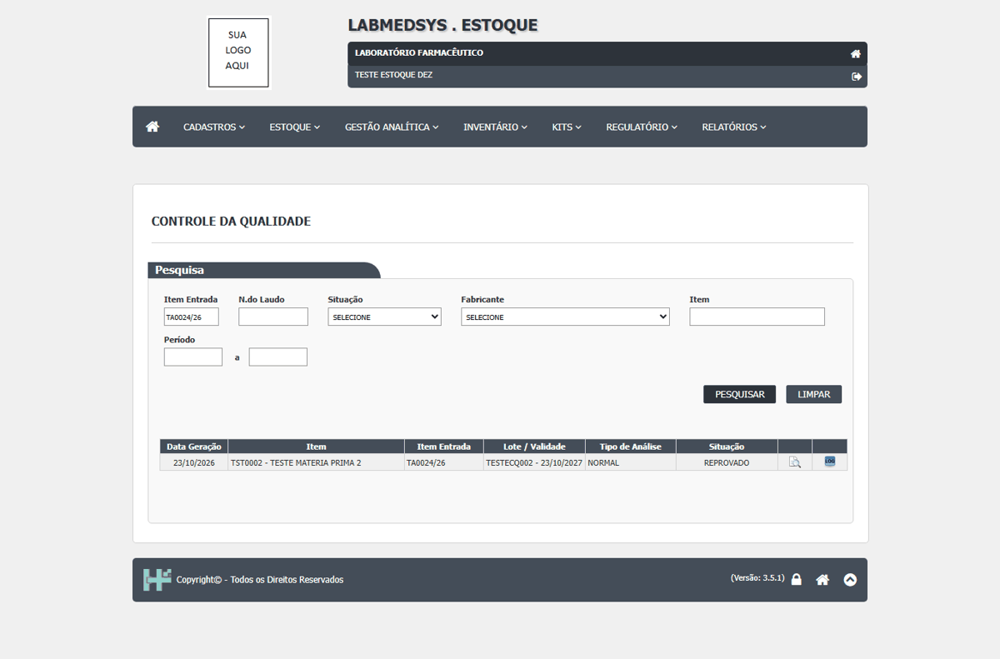
DV-CQ-005 · O laudo pode ser reprovado sem informar o motivo
Com o resultado fora da especificação (teor 130, limite de 90 a 110) e o campo **Observação** do laudo **em branco**, o botão **Reprovar** é aceito: "Confirma REPROVAR o laudo?" e "Alteração efetuada com sucesso.". Não há campo de motivo nem confere a observação.
Como reproduzir o erro, passo a passo
- Ter uma análise com resultado fora da faixa em "Liberar laudo".
- Abrir Emissão Laudo Final dessa análise, deixar a Observação vazia e clicar em Reprovar.
Esperado
Exigir motivo (e gravar quem reprovou) antes de reprovar.
Obtido
Reprovou sem motivo.
Evidência (captura da tela)
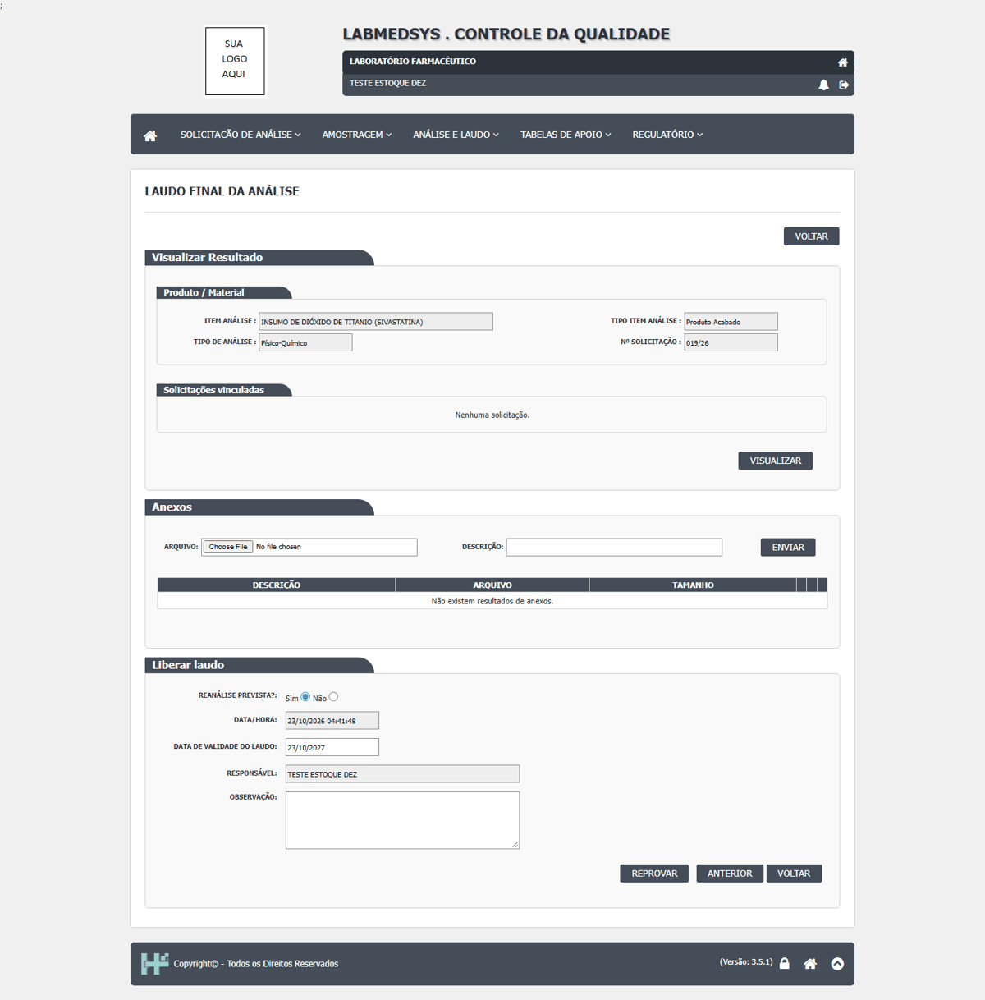
DV-CQ-006 · Aprovar, emitir e corrigir resultado não deixam histórico: a consulta de log vem vazia ou só mostra a inclusão
Depois de **aprovar, emitir o laudo e atualizar** a 017/26, o log da solicitação mostra **só a inclusão** feita pelo Estoque (22/10 e 23/10, sem os atos do CQ) e o log da análise diz **"NÃO EXISTE LOG DE ALTERAÇÃO PARA ESTE REGISTRO."** Na 018/26, o teor foi corrigido de 120 para 100 pela Emissão Laudo Final: a tela exigiu justificativa e disse "Alteração efetuada com sucesso.", o valor mudou, mas o log do ensaio também respondeu "NÃO EXISTE LOG DE ALTERAÇÃO PARA ESTE REGISTRO." (as duas linhas do ensaio). Quem aprovou e quem reprovou não é gravado.
Como reproduzir o erro, passo a passo
- Aprovar, emitir e atualizar uma análise; clicar no ícone Log da solicitação e da análise.
- Em Emissão Laudo Final › Anterior, corrigir o teor de um ensaio (lápis), informar a justificativa e salvar; abrir o ícone Log do ensaio.
Esperado
Cada decisão e cada correção com usuário, data, valor antigo, valor novo e justificativa.
Obtido
Log vazio ou só com a inclusão.
Evidência (captura da tela)


DV-CQ-009 · Ambiente e água: a digitação diz "Alteração efetuada com sucesso." mas não grava o resultado, e o laudo oferece só Aprovar
Na análise de ambiente da sala PRD-PES-01 (024/26), foram digitados **150 UFC** (limite 100) e **NÃO CONFORME**, com referência e data. A tela mostrou "Alteração efetuada com sucesso."; ao reabrir, **referência, data e resultado estão vazios** e só a observação ficou. A análise saiu da lista do analista e, na Emissão Laudo Final, ficou só o botão **Aprovar** (sem Reprovar). Repetido uma segunda vez, com o mesmo resultado. O boletim de ambiente impresso sai com a coluna Resultado em branco.
Como reproduzir o erro, passo a passo
- Registrar a amostragem de uma solicitação de ambiente e programar a análise (analista microbiológico).
- Em Consultar Análise Programada, abrir a análise, preencher referência, data e resultado dos dois ensaios e Salvar Registro.
- Abrir a análise de novo e conferir os campos.
Esperado
Gravar o resultado digitado e, estando fora do limite, oferecer Reprovar.
Obtido
Resultado perdido, mensagem de sucesso, laudo com Aprovar.
Evidência (captura da tela)


DV-CQ-043 · O laudo de um lote já vencido é aprovado e emitido, com validade do laudo depois da validade do lote
A solicitação 012/26 é de um lote com **validade 16/10/2026**, vencido desde antes do teste (30/10/2026). A tela de aprovação traz de início essa data (vencida) e recusou só por isso ("A Data de Validade tem que ser maior ou igual a atual."). Digitada uma data futura (29/11/2026), o laudo foi **aprovado e emitido**, e o PDF mostra na mesma folha "Validade: 10/16/2026" (lote) e "Validade Laudo: 29/11/2026". Não há conferência entre a data do laudo e a validade do lote, nem bloqueio da aprovação de lote vencido.
Como reproduzir o erro, passo a passo
- Levar a análise de um lote com validade já passada até o laudo (012/26, TA0007/26).
- Em Emissão Laudo Final, marcar Reanálise prevista = Sim e digitar uma data futura.
- Aprovar e emitir; imprimir o laudo.
Esperado
Recusar a aprovação de lote vencido, ou exigir a validade do laudo não maior que a do lote e uma justificativa de reteste.
Obtido
Laudo aprovado e emitido com validade do laudo posterior à validade do lote.
Evidência (captura da tela)
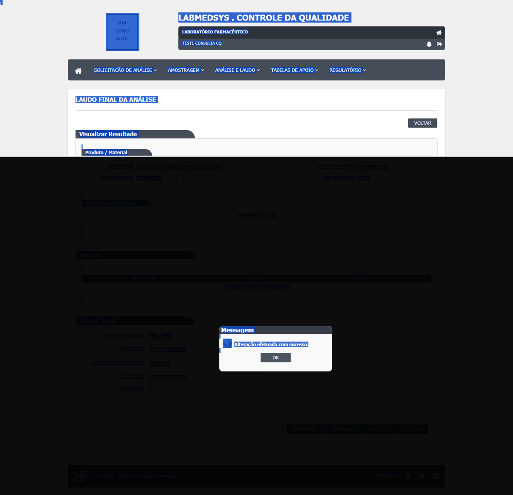
DV-CQ-022 · O CQ procura as funções profissionais por número fixo (34, 39, 41, 48 e 71) e os nomes cadastrados no Principal não combinam; a função 71 não existe
O código do CQ busca o amostrador pela função **34**, o analista físico-químico pela **39**, o analista microbiológico pela **41**, o chefe pela **48** e a estabilidade pela **71**. No cadastro do Principal, a 34 chama-se "AMOSTRADOR TESTANDO SISTEMA" (a função "AMOSTRADOR", de número 40, **não vale**: o usuário só apareceu na lista depois de receber a 34), a 39 chama-se "AUDITOR", a 41 "TESTE CQ - CHEFE DE SUBDIVISAO" e a **71 não existe** (o cadastro termina na 48), então a conferência da função de estabilidade nunca encontra ninguém. Os nomes de função não ajudam quem cadastra o usuário.
Como reproduzir o erro, passo a passo
- Dar a função 40 ("AMOSTRADOR") a um usuário e procurá-lo no campo Responsável da Programação de Amostragem: não aparece.
- Dar a 34 e procurar de novo: aparece.
Esperado
Funções identificadas por nome/código de configuração, não por número fixo; função de estabilidade existente.
Obtido
Número fixo, nomes trocados e uma função inexistente.
Evidência (captura da tela)

DV-CQ-044 · Nas listas com duas páginas (Consultar Análise Programada visão administrador e Emissão Laudo Final) a segunda página repete linhas da primeira
Com os filtros vazios, as duas listas mostram 14 linhas na página 1 e 11 na página 2 (25 no total), mas só **21 linhas diferentes**: quatro análises (005/26, 019/26, 014/26 e 006/26) aparecem **nas duas páginas**. A paginação não é estável, então quem percorre as páginas vê linhas em duplicidade e pode deixar de ver outras. Fora isso, os filtros de número, item de entrada, item pela lista de sugestões, tipo do item, tipo de análise, situação e período devolvem exatamente as linhas esperadas.
Como reproduzir o erro, passo a passo
- Abrir Consultar Análise Programada (visão administrador) ou Emissão Laudo Final.
- Pesquisar sem filtro.
- Comparar as linhas da página 1 com as da página 2.
Esperado
Cada análise em uma só página, na mesma ordem em todas as consultas.
Obtido
Quatro análises repetidas entre as páginas.
Evidência (captura da tela)


DV-CQ-025 · Relatórios: a etiqueta traz o nome de outra instituição, as datas saem em dois formatos e o boletim de ambiente sai em branco
A **etiqueta** (017/26) tem no alto "LABORATÓRIO QUÍMICO FARMACÊUTICO DA AERONÁUTICA", e o laudo e o boletim dizem "Laboratório Farmacêutico". O **laudo** traz "Validade Laudo: 23/10/2027" e, na mesma folha, "Validade: 10/23/2027" (data americana); o boletim também imprime a data de hoje como "10/23/2026 3:24:50 AM". O **boletim de ambiente** sai com "Data da exposição", "Ambiente avaliado", método, tempo, meios de cultura e as quatro condições (sala vazia, fluxo ligado, ar ligado, sala em atividade) **em branco**, para preencher a mão; a coluna Resultado também sai vazia (DV-CQ-009). A etiqueta com "Teor: 0.000" mostra o teor mesmo quando não é obrigatório.
Como reproduzir o erro, passo a passo
- Em Gerar Etiqueta, clicar no ícone de uma análise com laudo, informar a quantidade 2 e Imprimir.
- Em Emissão Laudo Final, clicar em Imprimir; em Consultar Análise Programada, imprimir uma análise de ambiente.
Esperado
Nome da instituição correto e igual nos documentos; data no mesmo formato; boletim com os dados da coleta.
Obtido
Nome de outra instituição, dois formatos de data e boletim sem dados.
Evidência (captura da tela)


DV-CQ-026 · Pequenos desvios de tela: teor sem faixa nem decimal, priorização de solicitação já liberada, mensagem repetida, menu duplicado e tela fora do menu em branco
(1) **Teor** do laudo: digitar "99,5" virou **995** e foi aprovado (sem limite de 100 % nem casas decimais). (2) **Priorização**: a solicitação 005/26, com laudo liberado, foi marcada como urgente ("Alteração efetuada com sucesso."). (3) **Programação de Análise** sem responsável: "Responsável não informado Responsável não informado" (mensagem repetida). (4) O **menu** mostra "Verificação de Amostragens" duas vezes (mesma tela, grupo Amostragem). (5) A tela **Consultar Coletas Pendentes de Programação** (fora do menu) abre **em branco**, sem título nem campos. (6) **Cadastros** com Ativo sem marcar: a unidade foi gravada como inativa e listada como "Nao" (sem acento).
Como reproduzir o erro, passo a passo
- Ver cada item na tela citada.
Esperado
Teor entre 0 e 100 com decimais; só priorizar o que não está liberado; mensagem única; menu sem repetição.
Obtido
Os comportamentos acima.
Evidência (captura da tela)
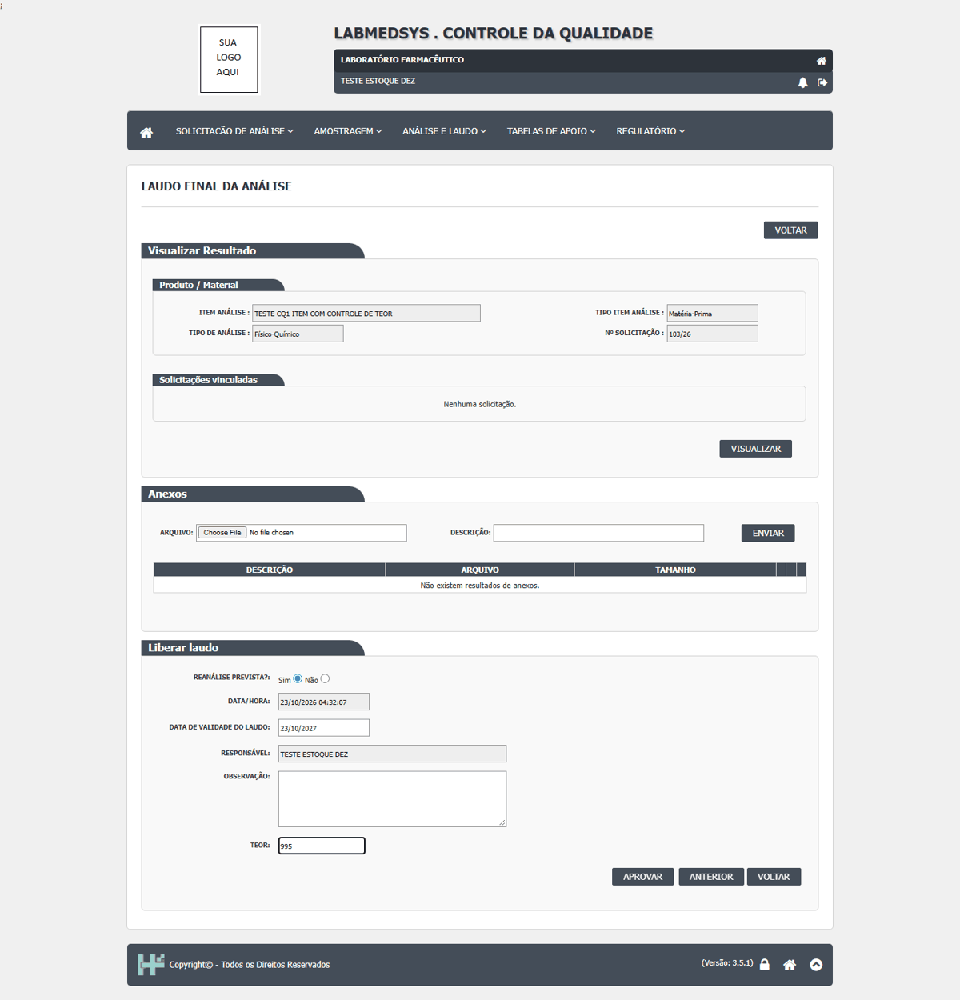
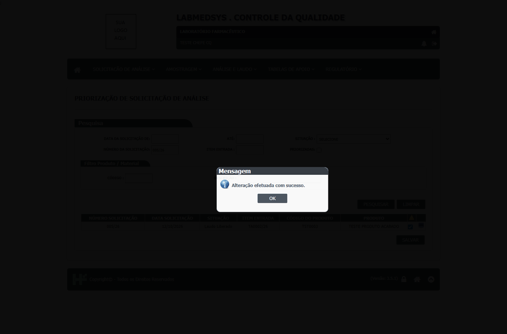
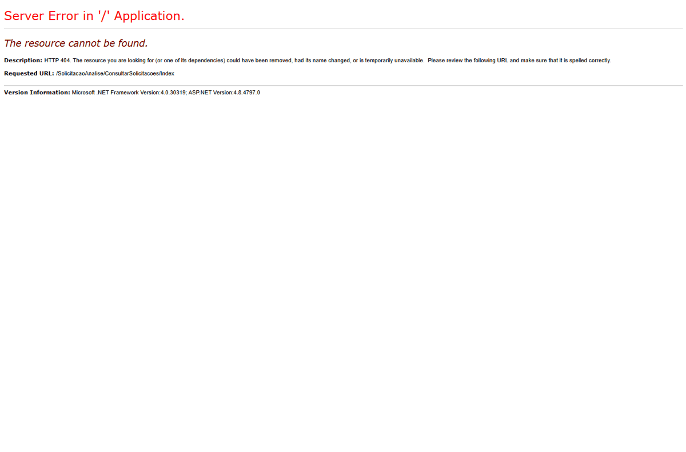
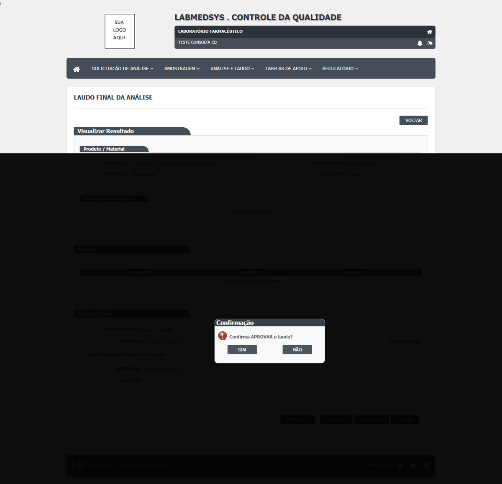
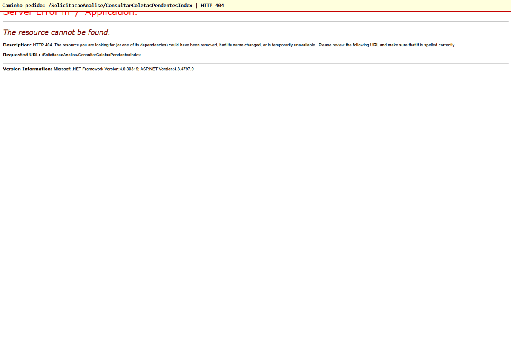
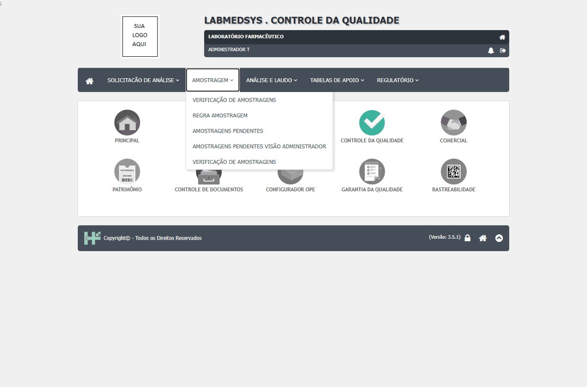